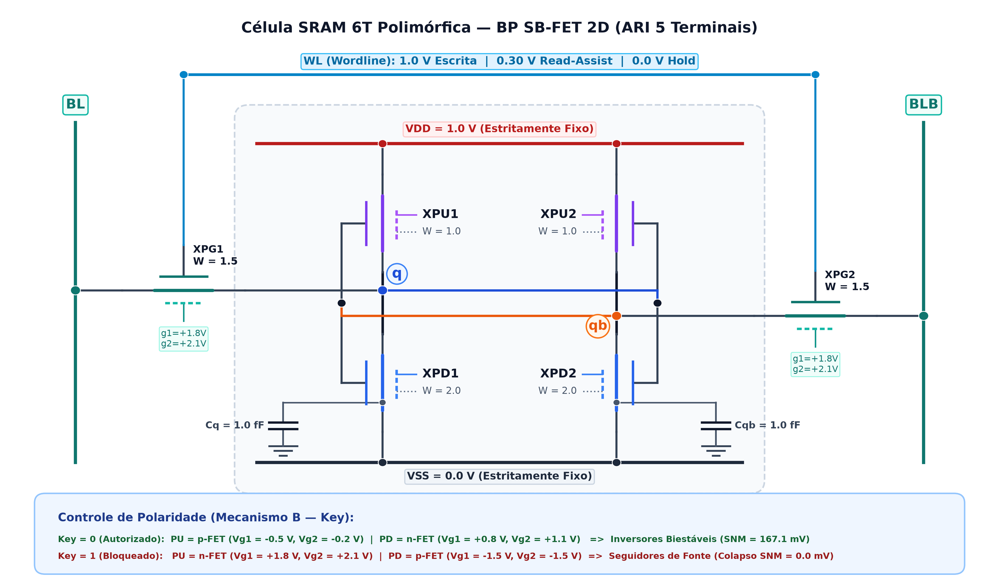
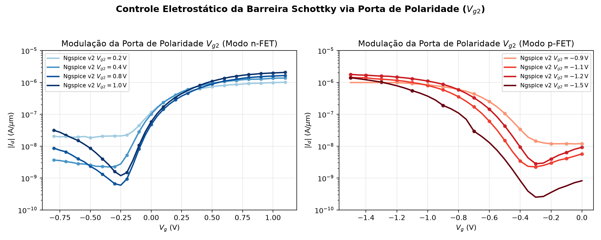
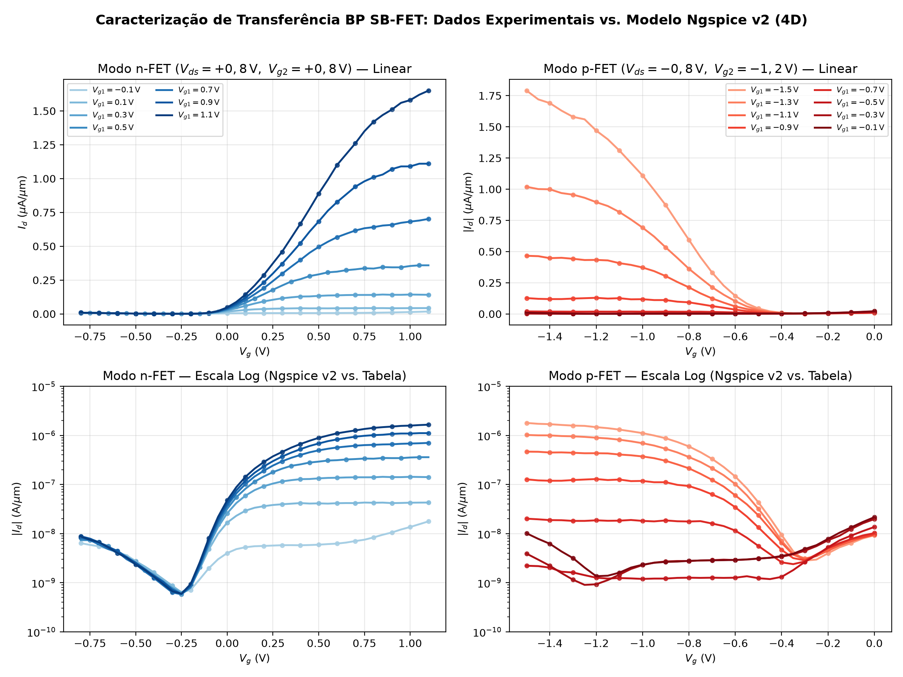
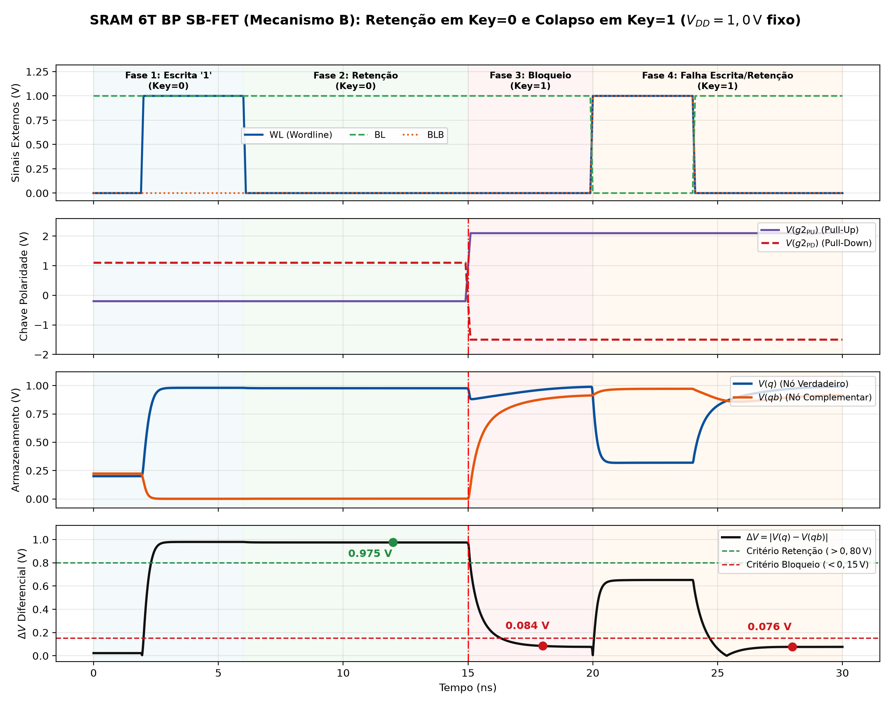
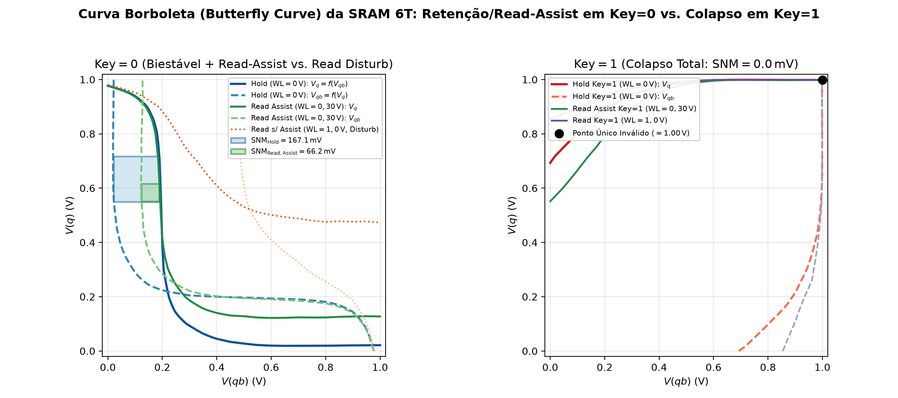

SRAM 6T Polimórfica com Transistores 2D para Segurança de Hardware
Polymorphic SRAM Using 2D Transistors for Enhanced Hardware Security
Problema, Proposta Polimórfica e Contribuições
Proteção de memória no nível do dispositivo com zero transistores extras
| Critério | CMOS Convencional | SRAM 6T BP SB-FET 2D |
|---|---|---|
| Polaridade | Fixa na fábrica (dopagem) | Dinâmica via porta g2 |
| Trilhos VDD / VSS | Cortados ou comutados | Estritamente Fixos (1,0 V / 0 V) |
| Área / Transistores | +Wrappers / células de corte | Zero overhead (mesmos 6T) |
| Layout Físico | Visível sob delayering | Camuflagem intrínseca |
bp_ari_ngspice.lib v2 · R² ≥ 0,99977 e erro ≤ 0,062%Key=0) vs. colapso < 3 ns (Key=1)Física do SB-FET 2D Ambipolar e Colapso na SRAM 6T
Tunelamento Schottky (WKB) controlado por Vg2 e perda de biestabilidade
ARI)Bloqueia lacunas e conduz elétrons
Bloqueia elétrons e conduz lacunas
- Configuração:
PU= p-FET ·PD= n-FET (|Av| > 1). - Retenção: Lóbulos abertos na curva borboleta (SNM > 0).
PG/PD eleva o nó baixo → resolvido por WL Underdrive (WL=0,30 V).
- Inversão no Núcleo:
PU→ n-FET ·PD→ p-FET (VDD, VSS fixos). - Seguidores de Fonte:
PUsó passa VDD − Vth,n;PDnão cai abaixo de |Vth,p|. - Perda de Memória: |Av| < 1 ⇒ ambos os lóbulos fecham (SNM = 0 mV).
Evolução de RFETs 1D/2D e Lacunas Preenchidas
Do estado da arte em memórias polimórficas ao avanço sobre Wu et al.
| Aspecto Técnico (Seção III) | Wu et al. (Nature Electronics) / Literatura | Este Trabalho (Contribuição Direta) |
|---|---|---|
| Fluxo de Simulação | ✗ Proprietário Synopsys HSPICE / Verilog-A | ✓ Open-Source ngspice-47 + Python reprodutível |
| Modelo 4D (Vg2=−1,5 V) | Parcial Extrapolação "1LL" com inversão de sinal |
✓ Completo (v2) Superfície 4D bilinear (196× menos erro) |
| SRAM 6T Trilhos Fixos | Inicial Conceito de inversão com transiente curto | ✓ Validado 4 Fases Retenção, colapso < 3 ns e bloqueio de escrita |
| Análise Estática SNM | ✗ Ausente Sem análise de deslocamento ΔVfb | ✓ Quantificada Sintonia Vg2,PU=−0,2 V (167,12 mV) |
| Mitigação de Read Disturb | ✗ Ausente Leitura sem assistência não avaliada | ✓ Resolvido WL Underdrive 0,30 V (66,23 mV, zero área) |
Pipeline de Tradução do Modelo 4D para ngspice-47
Substituição do $table_model proprietário pelo subcircuito nativo ARI v2
BP_ARI_dataN.txt (1.810 linhas) e BP_ARI_dataP.txt (759 linhas)..subckt ARI v2.printtr0.XPG1/2 e seguidores de fonte trocam dreno e fonte entre leitura e escrita sem descontinuidade.v1 e captura o deslocamento de banda plana ΔVfb ≈ −0,25 V.Arquitetura da SRAM 6T (Mecanismo B) e Protocolos de Teste
Topologia, polarizações com trilhos fixos e extração de SNM a 45°

XPU1/2 W=1,0; XPD1/2 W=2,0; XPG1/2 W=1,5; Cq=Cqb=1,0 fF; VDD=1,0 V, VSS=0,0 V).| Chave | Pull-Up (W=1,0) | Pull-Down (W=2,0) | Regime |
|---|---|---|---|
| Key=0 | p-FET (Vg1=−0,5 V, Vg2=−0,2 V) | n-FET (Vg1=+0,8 V, Vg2=+1,1 V) | CMOS Biestável |
| Key=1 | n-FET (Vg1=+1,8 V, Vg2=+2,1 V) | p-FET (Vg1=−1,5 V, Vg2=−1,5 V) | Seguidores de Fonte |
- 0–6 ns (
Key=0): Escrita `'1'` (WL=1 V, BL=1 V, BLB=0 V). - 6–15 ns (
Key=0): Retenção ativa (WL=0 V; meta ΔV > 0,80 V em 12 ns). - 15–20 ns (
Key=1): Autodestruição em 15 ns (meta ΔV < 0,15 V em 18 ns). - 20–30 ns (
Key=1): Tentativa de sobrescrita bloqueada (ΔV < 0,15 V em 28 ns).
Validação Cruzada 4D: ngspice-47 vs. Synopsys HSPICE
Redução de 196× no erro RMSE da saída p-FET ao capturar Vg2 = −1,5 V
Regime (.printtr0) |
RMSE v1 (μA) | RMSE v2 (μA) | Redução | R²v2 |
|---|---|---|---|---|
N_transfer (7 curvas) |
0,001910 | 0,001899 | −0,6% | 0,999972 |
P_transfer (4 curvas) |
0,000947 | 0,000947 | 0,0% | 0,999944 |
N_output (6 curvas) |
0,196416 | 0,130430 | −33,6% | 0,927855 |
P_output (−1,5 V) |
0,590087 | 0,003013 | −99,5% (196×) | 0,999774 |
P_output- A versão preliminar
v1(1D +tanh) superestimava a corrente em Vg2 = −1,5 V (R² = −7,6723). - Ao incorporar explicitamente a superfície medida para −1,5 V, o modelo
v2derruba o RMSE para 0,003013 μA/μm e eleva R² para 0,999774.
- O travamento plano ±1000 V evita inversões não físicas e garante convergência rápida nos transientes da SRAM.

v1), modelo 4D refinado (v2) em ngspice-47 e referências .printtr0 do Synopsys HSPICE.Caracterização Física de Vg2 e Banda Plana (ΔVfb)
Métricas experimentais a |Vds| = 0,8 V e impacto no pull-up da SRAM

- Em Vg2 = −1,5 V, o desvio ΔVfb ≈ −0,25 V reduz a corrente do p-FET de 1,79 μA para 0,37 μA (em Vgp = −1,0 V), governando o pull-up da célula.
| Modo (|Vds| = 0,8 V) | Ion (μA/μm) | Ioff (nA/μm) | Ion/Ioff | SSmin (mV/dec) |
|---|---|---|---|---|
| n-FET (Vg1=1,1 V, Vg2=0,8 V) | 1,650 | 0,596 | 2,77 × 10³ | 106,59 |
| p-FET (Vg1=−1,5 V, Vg2=−1,2 V) | 1,790 | 2,811 | 6,37 × 10² | 148,08 |

ngspice-47 v2.Resultados Transientes (30 ns): Retenção e Auto-Destruição
Apagamento > 91% em < 3 ns e imunidade a re-escrita não autorizada
WL = 1,0 V (2–6 ns), BL = 1,0 V, BLB = 0,0 V gravam o estado complementar.
WL = 0,0 V. Em 12 ns: V(q)=0,9768 V, V(qb)=0,0020 V e ΔVKey0 = 0,9747 V.
Chave comuta em 15 ns; diferencial colapsa > 91% em 3 ns: ΔVCollapse1 = 0,0841 V.
Estímulo oposto com WL = 1,0 V (20–24 ns) colapsa ao fechar WL: ΔVKey1 = 0,0762 V.

ngspice-47.Curvas Borboleta, SNM e Mitigação via Wordline Read-Assist
Sintonia de banda plana e eliminação do Read Disturb sem área extra

Key=0 (Hold, Read-Assist e Read sem assistência) vs. colapso monostável em Key=1 (SNM = 0,00 mV).- Sob Vg2,PU = −0,5 V (Vg2,s = −1,5 V), o desvio ΔVfb ≈ −0,25 V reduz a corrente p-FET para 0,37 μA e degrada SNMHold para apenas 49,4 mV.
- Ajustar Vg2,PU para −0,2 V (Vg2,s = −1,2 V) sem redimensionar larguras W restaura a simetria: SNMHold = 167,12 mV (16,7% de VDD).
- Leitura sem assistência (WL = 1,0 V) fecha o olho da curva devido aos pass-gates fortes (WPG = 1,5), gerando Read Disturb destrutivo (SNM = 0,00 mV).
- Aplicar Wordline Underdrive Read-Assist (WL = 0,30 V) enfraquece a contenção e recupera SNMRead,Assist = 66,23 mV; em
Key=1todos os regimes ficam em 0,00 mV.
Matriz dos 11 Critérios e Vantagens em Segurança de Hardware
Conformidade integral e comparação frente à zeroização CMOS convencional
| Métrica Extraída da SRAM 6T | Simulado | Critério / Status |
|---|---|---|
V(q)Hold (Key=0, 12 ns) |
0,9768 V | > 0,80 V · Passou |
V(qb)Hold (Key=0, 12 ns) |
0,0020 V | < 0,20 V · Passou |
| ΔVKey0 (12 ns) | 0,9747 V | > 0,80 V · Passou |
| ΔVCollapse1 (18 ns) | 0,0841 V | < 0,15 V · Passou |
| ΔVKey1 (28 ns) | 0,0762 V | < 0,15 V · Passou |
SNMHold (Key=0, WL=0 V) |
167,12 mV | > 150 mV · Passou |
SNMRead,Unass. (Key=0, WL=1,0 V) |
0,00 mV | Read Disturb |
SNMRead,Assist (Key=0, WL=0,30 V) |
66,23 mV | > 50 mV · Passou |
SNMHold (Key=1, WL=0 V) |
0,00 mV | = 0 mV · Bloqueado |
SNMRead,Assist (Key=1, 0,30 V) |
0,00 mV | = 0 mV · Bloqueado |
SNMRead,Unass. (Key=1, 1,0 V) |
0,00 mV | = 0 mV · Bloqueado |
- Layout idêntico ao 6T padrão (6 transistores), sem dispositivos adicionais de corte nem lógica por célula.
- Geometria e contatos invariantes resistem a delayering óptico/SEM.
- Com VDD = 1,0 V e VSS = 0,0 V estritamente fixos, fixar pinos de alimentação externos não bloqueia o apagamento.
- Portas g2 de baixa capacitância colapsam o bit em menos de 3 ns e impedem injeção de dados enquanto bloqueada.
Conclusões Gerais, Limitações e Trabalhos Futuros
Fechamento científico e próximos passos para arranjos SRAM 2D
- Fluxo Aberto Validado: O subcircuito
bp_ari_ngspice.lib v2reproduz as tabelas 4D com erro médio ≤ 0,0621% e reduz em 196× o RMSE de saída p-FET frente ao Synopsys HSPICE (R² = 0,999774). - Segurança Nativa em 6T SRAM: O Mecanismo B combina retenção estável em
Key=0(ΔVKey0 = 0,9747 V, SNMHold = 167,12 mV com Vg2,PU = −0,2 V) com colapso em < 3 ns e bloqueio de escrita emKey=1(SNM = 0,00 mV, ΔVCollapse1 = 0,0841 V). - Estabilidade de Leitura Sem Área Extra: Wordline Underdrive Read-Assist (WL = 0,30 V) supera o Read Disturb, restaurando SNMRead,Assist = 66,23 mV.
- Natureza Quase-Estática: Assim como o
bp_ari.vaoriginal, as LUTs omitem capacitâncias intrínsecas de porta (compensadas externamente por Cq = Cqb = 1,0 fF). - Lacuna Experimental Não Medida: A região intermediária V(g2, s) ∈ (−0,90; +0,20) V não possui medições experimentais na base publicada.
- Redes Capacitivas Parasitas: Incorporar capacitâncias intrínsecas dependentes de polarização para análise de atraso e energia.
- Variabilidade Estatística: Avaliar sensibilidade de SNM a defeitos e variabilidade de processo em canais 2D.
- Matrizes Multi-Célula (2×2 e 4×4): Investigar margens de escrita (Write Margin) e caminhos parasitas de fuga (bitline sneak paths).
github.com/BernardooVale/tp_nano · ngspice-47 + Python